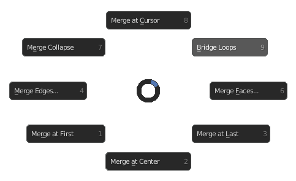

Edit Bridge / Merge Menu
Hotkey: M
Functions / Table of Contents
- Merge at Cursor
- Bridge Loops
- Merge Faces
- Merge at Last
- Merge at Center
- Merge at First
- Merge Edges
- Merge Collapse
Merge at Cursor
Merges all selected vertices at the 3D cursor point.
Also see: Blender Manual
Bridge Loops
Connects two edge loops together by creating faces between them.
Also see: Blender Manual
Merge Faces
Merges selected faces at the selected point, either at the first selection, the last or the center. The merge point can be changed in the dialog box that appears in the bottom left corner.
Merge at Last
Merges all vertices selected before the last to the point of the last selected vertex.
Also see: Blender Manual
Merge at Center
Merges all selected vertices to one at the median point of their locations.
Also see: Blender Manual
Merge at First
Merges all vertices selected after the first to the point of the first selected vertex.
Also see: Blender Manual
Merge Edges
Mergs selected edges at the selected point, either at the first selection, the last or the center. The merge point can be changed in the dialog box that appears in the bottom left corner.
Merge Collapse
Disconnected selections will merge independently, if two edges are selected and are not touching, they will be collapsed to one vertex each on their own median points.
Also see: Blender Manual